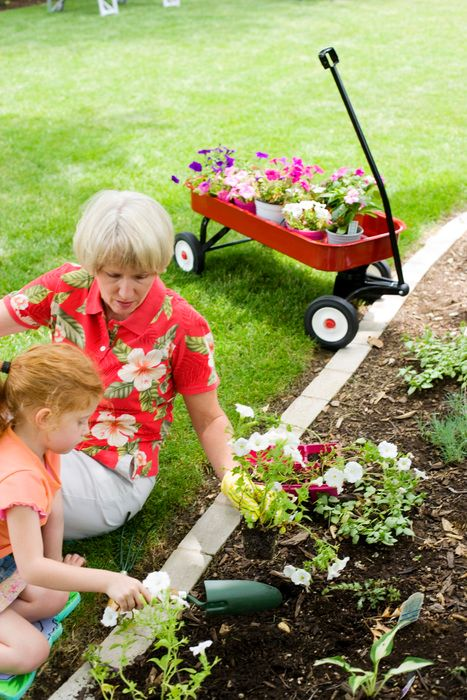

家庭影像 42 张
录音 18 段
从旧照片、录音和家书里，慢慢拼回她的样子
这里不只是相册，而是一座家庭记忆馆。你可以按照时间、场景和人物重新翻看那些珍贵片段。
时间线
按人生片段整理
2023 · 生日饭桌
视频 01:42女儿回家陪她过生日，笑着说“人回来就行，不用买那么多东西”。

2022 · 客厅闲聊
录音 00:58吃过晚饭以后，她在沙发上聊起你小时候爱哭又爱逞强的事。

2021 · 院子里晒太阳
照片 6 张她最喜欢把花养在院子里，说看着植物长大，心也会安静下来。
主题记忆
适合继续整理她喜欢的日常
读书、做饭、晒太阳

一起出门的日子
散步、买菜、回家路上